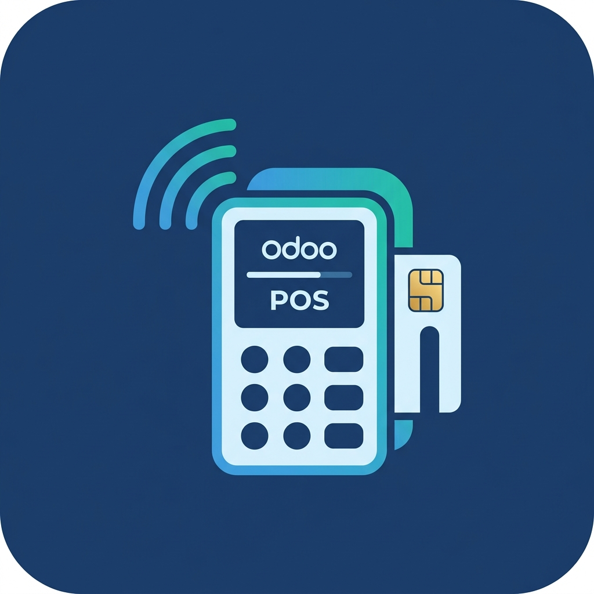

Connect your retail store's physical card payment terminals directly to Odoo 18 Point of Sale. Experience quick customer checkouts without manual entry errors on the terminal.
Payment requests are automatically sent from Odoo to the Nave Smart POS terminal, prompting the customer to swipe/tap their card.
The POS interface polls the terminal status, instantly confirming when the transaction is approved or rejected by the bank.
Process returns and refunds seamlessly. The POS sends the return signal to the terminal to reverse the charge securely.